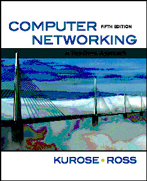

This little HTML file is being served by gaia.cs.umass.edu.
It contains two embedded images. The image above, from the web site of
our publisher, is served by the server www.pearsoned.com. The image of our
book(5th edition) below is stored at the www server manic.cs.umass.edu:
